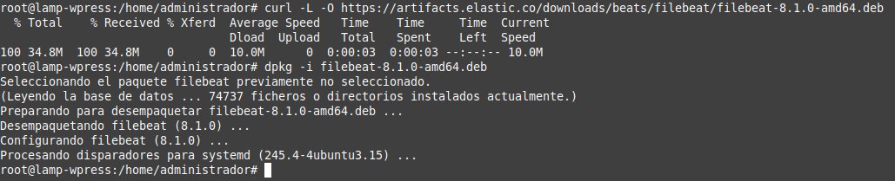
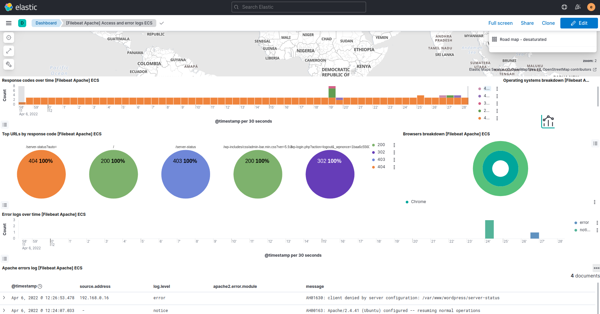
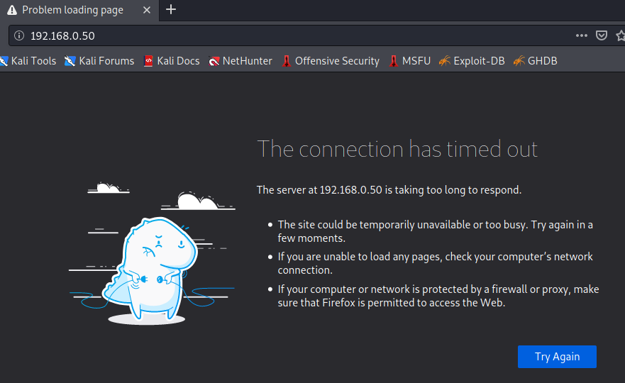
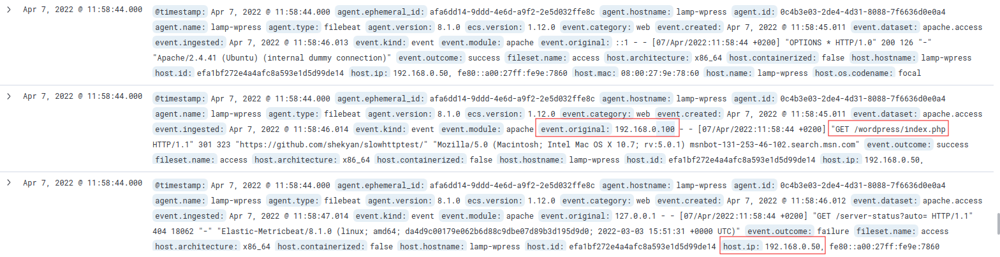
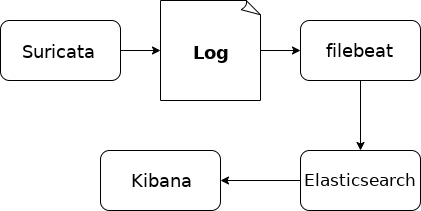

Laboratorio 3. Detección de Ataques DoS con Elastic Stack y Suricata
1. Introducción
En este laboratorio, se analiza la detección de ataques DoS usando un entorno monitorizado por Elastic Stack y Suricata como NIDS. Como se puede observar en la figura 1, el equipo sobre el que se tiene que realizar el ataque DoS tiene un entorno LAMP instalado con WordPress. Para su monitorización, hay que instalar en el mismo los servicios Filebeat, Metricbeat y Packetbeat con sus respectivos módulos instalados para Apache y MySQL. Además de eso, hay que instalar Suricata como NIDS paramonitorizar el tráfico de la red.
Figura 1. Esquema de red del laboratorio.
2. Recursos necesarios
- Servidor ubuntu server con el SIEM Elastic Stack en producción.Â
- Máquina virtual con kali linux: Equipo atacante.
- Máquina virtual Ubuntu Server 20.04.4 Cliente 01. Enlace de descarga de la ova.
- ip: 192.168.0.50.
- Usuario: administrador
- Password: Ciber-100
- Usuario administrador de Wordpress:
- user: admin-wp.
- passsword: Ciber-100.
- Base de datos mysql WordPress:
- database:Â wordpress.
- user: user-wp.
- password: Ciber-100.
{kind=link}
Figura 2. Página web de la organización.
Si se modifica la ip del equipo cliente 01, hay que realizar el siguiente cambio en el fichero wp-config.php ubicado en /etc/www/wordpress.Â
Hay que añadir las siguientes lÃneas justo después de donde aparece el siguiente texto --> /* That's all, stop editing! Happy publishing. */
- define( 'WP_HOME', 'http://Nueva_IP' );
- define( 'WP_SITEURL', 'http://Nueva_IP' );
3. Instalar Beats en el equipo objetivo
En el equipo objetivo, se van a instalar los beats metric, file y packet para poder monitorizar el servidor web e impedir los posibles ataques de DoS al servicio web.
3.1 Instalación y configuración de filebeat
Hay que descargar filebeat y después instalarlo con dpkg. Nota: Este método es alternativo al que ya se estudió en el capÃtulo 3.1.5. De este modo, se garantiza instalar la versión 8.1.0 que es la que se tiene en el servidor Elastic Stack.
root@lamp-wpress:/home/administrador#curl -L -O https://artifacts.elastic.co/downloads/beats/filebeat/filebeat-8.1.0-amd64.deb
root@lamp-wpress:/home/administrador#dpkg -i filebeat-8.1.0-amd64.deb

Figura 3. Instalación de filebeat.
A continuación, hay que configurar filebeat para kibana y elasticsearch. El fichero de configuración está disponible en el siguiente enlace de github.
 |
Pulsa en la imagen para accede al fichero filebeat.yml. |
Una vez se ha modificado el fichero filebeat.yml, el siguiente paso es habilitar los módulos de apache y mysql con el siguiente comando.
root@lamp-wpress:/#filebeat modules enable apache mysql
Figura 4. Habilitar el módulo apache y mysql.
Una vez habilitados los módulos hay que configurarlos. Los ficheros de configuración están disponibles en el siguiente enlace de github.
|
Pulsa en la imagen para acceder a los ficheros apache.yml y mysql.yml. |
A continuación, hay que testear el fichero de configuración y salida de filebeat para asegurarse que las modificaciones realizadas en filebeat.yml y módulos son correctos. Una vez que el test devuelva Ok, ya se puede iniciar el servicio y habilitarlo en el arranque del sistema con el siguiente comando:
root@lamp-wpress:/#systemctl enable --now filebeat
3.2 Instalación y configuración de metricbeat
En primer lugar, hay que descargar metricbeat y después instalarlo con dpkg.Â
root@lamp-wpress:/home/administrador#curl -L -O https://artifacts.elastic.co/downloads/beats/metricbeat/metricbeat-8.1.0-amd64.deb
root@lamp-wpress:/home/administrador#dpkg -i metricbeat-8.1.0-amd64.deb
Figura 5. Instalación de metricbeat.
A continuación, hay que configurar metricbeat para kibana y elasticsearch. El fichero de configuración está disponible en el siguiente enlace de github.
|
Pulsa en la imagen para accede al fichero metricbeat.yml. |
A continuación, hay que habilitar los módulos de apache y mysql.Â
root@lamp-wpress:/#metricbeat modules enable apache mysql
Figura 6. Habilitar el módulo apache y mysql.
Los ficheros de configuración están disponibles en el siguiente enlace de github.
|
Pulsa en la imagen para acceder a los ficheros apache.yml y mysql.yml. |
A continuación, hay que testear el fichero de configuración y salida de metribeat y si se tiene éxito, ya se puede iniciar el servicio y habilitarlo en el arranque del sistema con el siguiente comando:
root@lamp-wpress:/#systemctl enable --now metricbeat
3.3 Instalación y configuración de packetbeat
En primer lugar, hay que descargar packetbeat y después instalarlo con dpkg.
root@lamp-wpress:/home/administrador#curl -L -O https://artifacts.elastic.co/downloads/beats/packetbeat/packetbeat-8.1.0-amd64.deb
root@lamp-wpress:/home/administrador#dpkg -i packetbeat-8.1.0-amd64.deb
Figura 7. Instalación de packetbeat.
A continuación, hay que configurar packetbeat para kibana y elasticsearch. El fichero de configuración está disponible en el siguiente enlace de github.
|
Pulsa en la imagen para accede al fichero packetbeat.yml. |
A continuación, hay que testear el fichero de configuración y salida de packetbeat y si se tiene éxito, ya se puede inicia el servicio y habilitarlo en el arranque del sistema con el siguiente comando:
root@lamp-wpress:/#systemctl enable --now packetbeat
Cargar la plantilla de Ãndice en Elasticsearch
Para tener plantillas disponibles, hay que realizar la carga de la misma manualmente. En primer lugar hay que generar el fichero plantilla mediante el siguiente comando.
root@lamp-wpress:/etc/packetbeat/#packetbeat export template > packetbeat.template.json
Figura 8. Exportar la plantilla de packetbeat.
A continuación, hay que copiar el fichero en el equipo donde se tiene Elastic Stack. Para este caso, se copia en el home del usuario administrador.
root@lamp-wpress:/etc/packetbeat/#scp packetbeat.template.json administrador@192.168.0.254:/home/administrador
Figura 9. Copiar la plantilla al equipo donde esta Elastic Stack.
Una vez se ha transferido el fichero, en el equipo donde se tiene Elastic Stack, hay que instalar la plantilla (fichero transferido), es decir, el fichero packetbeat.template.json. Para ello, hay que ejecutar el siguiente comando:
root@elastics-master01:/home/administrador/#curl -XPUT -H 'Content-Type: application/json' --cacert /etc/elasticsearch/certs/http_ca.crt -u \
elastic 'https://elastics-master01:9200/_index_template/packetbeat-8.1.0' -d@packetbeat.template.json
Figura 10. Instalación de la plantilla.
4. Generar data views
Una vez se han iniciado los servicios sin errores, hay que acceder al entorno Elastic stack para genear los data views de metricbeat, filebeat y packetbeat.
Metricbeat
Filebeat
Packetbeat
A continuación y como ejemplo, se abre el dashboard predeterminado para Filebeat Apache - Access and error logs ECS. Este dashboard está preparado para leer los eventos de apache recogidos con filebeat.

Figura 11. Dashboard  Filebeat Apache - Access and error logs ECS
5. Prueba de ataque DoS en el puerto 80
Una vez se tiene el equipo objetivo recolectando logs y el equipo Elastic Stack recopilando los mismos, como simulación, se va a realizar una simulación de ataque DoS donde se van a utilizar dos herramientas.
1ª Herramienta.
hping3. Es una aplicación de terminal para Linux que permite analizar y ensamblar fácilmente paquetes TCP/IP. A diferencia de un Ping convencional que se utiliza para enviar paquetes ICMP, esta aplicación permite el envÃo de paquetes TCP, UDP y RAW-IP. Junto al análisis de los paquetes, esta aplicación puede ser utilizada también con otros fines de seguridad, por ejemplo, para probar la eficacia de un firewall a través de diferentes protocolos, la detección de paquetes sospechosos o modificados, e incluso la protección frente a ataques DoS de un sistema o de un Firewall.
Para realizar el ataque, hay que instalar la aplicación en el equipo atacente mediante el comando apt install hping3. Para este caso, dado que se utilizará un equipo Kali Linux, no es necesario instalar la herramienta ya que viene instalado por defecto.
El ataque DoS se realizará en el puerto 80 de la máquina objetivo mandando paquetes TCP SYN (SYN Flood Attack).
Figura 12. Esquema DDoS.
Si se observa la figura superior, se puede ver que incluso se podrÃa falsificar la dirección IP de la que provienen los ataques, aunque para este caso de ejemplo, no se realizará. Para falsificar, hay que utilizar -a ip_falsa.
┌──(root💀kali)-[/home/kali]
└─# hping3 -p 80 -S --flood 192.168.0.50
Figura 13. Simulación Ataque DoS.
Si se accede al menú Analytics --> Discover del index packetbeat, se puede apreciar que la simulación del ataque DoS enviando paquetes TCP SYN al no establecerse una conexión completa, Elastic no registra ningún log sobre la recepción de estos paquetes de manera maliciosa, es decir, si lo hubiera detectado, mostrarÃa en la propiedad event.category: network, intrusion_detection.
{kind=link}
Figura 14. Discover de metricbeat
Para resolver este inconveniente, en un apartado posterior, se instalará el IDS/IPS Suricata para poder detectar este tipo de ataques y su envÃo de los eventos a Elastic por medio de Filebeat.
┌──(root💀kali)-[/home/kali]
└─# apt install slowhttptest
Para lanzar una ataque al servidor web, el comando es el siguiente:
┌──(root💀kali)-[/home/kali]
└─# slowhttptest -c 1000 -H -g -o slowhttp -i 10 -r 200 -t GET -u http://192.168.0.50/wordpress/index.php -x 24 -p 3
Figura 15. Simulación Ataque DoS.
A continuación, se adjuntan las capturas de la salida del comando.
1
2
3
Si se accede al Dashboard de Filebeat de Apache se pueden ver picos de conexiones HTTP a la url destino wordpress/index.php utilizada en el ataque.
Figura 16. Dashboard de Filebeat de Apache.
Y el servidor web está fuera de servicio.

Figura 17. Página web fuera de servicio.
Filtrando los eventos, se puede apreciar que el dÃas 07 de abril a las 11:58 hubo 124 peticiones HTTPÂ (GET http://192.168.0.50/wordpress/index.php).
Figura 18. Discover filebeat.
Gráfica Analitycs --> Discover
Si se observa el log de una de estas peticiones, se puede apreciar la url destino del ataque (192.168.0.50), y lo más importante, la IP de la máquina atacante (192.168.0.100).

Figura 19. Detección ip origen del método GET.
Filtrando en los logs de Packetbeat se puede identificar también la ip y puerto de la máquina atacante.
Figura 20. Filtrado de paquetes packetbeat.
Figura 21. Propiedades de un evento de filebeat.
Se puede identificar también que después de haber realizado el ataque hay un pico en las consultas MySQL y número de conexiones.
Figura 22. Comprobación de Mysql.
Se puede observar también que en el pico del ataque se ejecutaron 492 consultas SELECT a la base de datos.
Figura 23. Comprobación de las consultas SQL.
6. Instalar Suricata
En este apartado hay que instalar y configurar Suricata siguiendo lo visto en el capÃtulo 2.3.
Recordar, que una de las ventajas de Suricata es que puede funcionar como sniffer, (se puede ver en consola y en tiempo real qué ocurre en la red), registro de paquetes (permite guardar en un archivo los logs para su posterior análisis, un análisis offline) o como un IDS normal (en este caso NIDS). Cuando un paquete coincide con algún patrón establecido en las reglas de configuración, se loguea. Asà se sabe cuándo, de dónde y cómo se produjo el ataque.Â
El esquema que se va a utilizar para la adquisición de logs de Suricata y el envÃo de los mismos a ElasticSearch es el siguiente:

Figura 24. Esquema de recogida de logs suricata y envÃo a elasticsearch.
6.1 Añadiendo reglas a Suricata
Para poder detectar ataques DoS enviando paquetes TCP SYN en el puerto 80 se va a construir una regla personalizada. Para ello, en primer lugar hay que crear un archivo en /etc/rules al que se le llama como ejemplo ciber.rules. En este fichero, se irán añadiendo las reglas que interesen, es decir, son las reglas personalizadas.
alert tcp any any -> $HOME_NET 80 (flags: S; msg:"Posible ataque DoS Type : SYNflood";
flow:stateless; sid:1000001; detection_filter:track by_dst, count 20, seconds 10;)
Explicación de la regla. La regla se divide en la cabecera de la regla y sus opciones.
Cabecera de la regla:
- alert – Acción de la regla. Suricata generará una alerta cuando se cumplan los requisitos.
- tcp – Protocolo.
- any – IP origen. Suricata filtrará cualquier origen.
- any – Puerto origen. Suricata filtrará cualquier puerto.
- -> – Dirección. Desde el origen al destino..
- $HOME_NET – IP destino. Se está usando el valor de HOME_NET de suricata.yaml.
- 80 – Puerto de destino. Suricata analizará en el puerto 80.
Opciones de la regla:
- flags:S – Chequea que los bits especÃficos de TCP (en este caso SYN) están presentes.
- msg:”Posible ataque DoS - Type : SYNflood”  – Suricata incluirá este mensaje en la alerta.
- flow:stateless – No se tiene en cuenta la inspección de estado.
- sid:1000001 –ID de la regla de Suricata. Los ids < 1,000,000 están reservados.
- detection_filter:track by_dst – Suricata trackea la IP.
- seconds 10 – PerÃodo de muestreo.
- count 20 – Si durante 10 segundos se han recibido más de 20 peticiones, Suricata generará una alerta.
A continuación, hay que añadir el fichero ciber.rules en la sección rule-files del fichero suricata.yaml.
Figura 25. Definición de los ficheros de reglas en suricata.
7. EnvÃo de logs de Suricata a Elastic Search
Debido a que existe un módulo de elastic de Suricata, se hará uso del mismo para el tratamiento de los logs de Suricata y envÃo a Elastic, es decir, mediante el módulo suricata de filebeat se recogerán los datos del fichero eve.json para enviar los mismos a elasticsearch.
Otra opción serÃa instalar logstash y que este recopilara los eventos de suricata y los enviara a elasticsearch. La ventaja de usar logstash es que con el filtro se pueden filtrar eventos y poder alterarlos según necesidades.
El procedimiento a realizar es el mismo que se describe en el 3.1.6.5 Suricata en Kibana.Â
Al final, se tendrá un data stream suricata-YYYY.MM.dd en elastic con los eventos recogidos. Para este caso de ejemplo, dado que se realiza la configuración el 08 de abril de 2022, el data stream será suricata-2022-04-08.
A continuación, se tiene el enlace a los filebeat.yml y suricata.yml del módulo suricata.
|
Pulsa en la imagen para acceder al repositorio. |
8. Detección de ataques con Suricata TCP SYN Flood
Una vez configurado el equipo objetivo con filebeat y suricata, hay que simular el ataque DoS con flood de paquetes TCP SYN desde el equipo atacante. En el ejemplo que se describe a continuación, decir que, el ataque se realiza el 08 de abril a las 08:02 aproximadamente.
┌──(root💀kali)-[/home/kali]
└─# hping3 -p 80 -S --flood 192.168.0.50

Figura 26. Simulación del ataque DDoS.
A continuación, se accede a Elastic para observar las alertas generadas por Suricata. Para ello, hay que crear el 'data view' a partir del 'data stream'  suricata-2022.04.08 y que se le nombra como suricata-2022.04.08.Â
Figura 27. Dataview creado.
Una vez se tiene el data view, hay que acceder a 'Analitys --> Discover' y seleccionar el data view suricata-2022.04.08. Como se puede observar en la figura inferior, se han contabilizado 13.937 eventos que están relacionados con el ataque en su gran mayorÃa. Si se observa en los datos inferiores al gráfico, se detecta una intrusión por cada uno de los datos del ataque.
Figura 28. Detección del ataque DDoS.
Si se accede a los datos json, se obtiene toda la información: ip origen del ataque, el nombre de la regla que se puso en suricata (Posible ataque DoS - Type: SYNfllod), etcétera.
Para obtener información gráfica, hay que acceder a los dashboards que se tienen por defecto para suricata en concreto: [Filebeat Suricata] Alert Overview y [Filebeat Suricata] Events Overview.
En primer lugar, se accede a [Filebeat Suricata] Alert Overview.
1. Gráfico de alertas
2. Mapa de alertas
3. Tabla de alertas
El origen 192.168.0.100 es el del equipo atacante.
A continuación, se accede a [Filebeat Suricata] Events Overview:
Datos gráficos
Los eventos relacionados con accesos a GB (Gran Bretaña), son accesos no maliciosos.
Datos tabulares
9. Conclusiones
El uso de SIEM's como Elastic Stack nos permite disponer de mucha información para su posterior análisis en caso de un incidente de ciberseguridad. El uso de un IDS como Suricata también nos permite tener monitorizado todo el tráfico de la red y a la vez obtener alertas cuando se produzcan comportamientos sospechosos.Â
En este caso de estudio 'ataque de DoS con TCP SYN Flood', en primer lugar no ha sido identificado por Elastic Stack por no realizar conexiones TCP completas, sin embargo, Suricata con las alertas adecuadas si ha sido capaz de detectar el ataque.
10. Referencias
Obra publicada con Licencia Creative Commons Reconocimiento No comercial Compartir igual 4.0